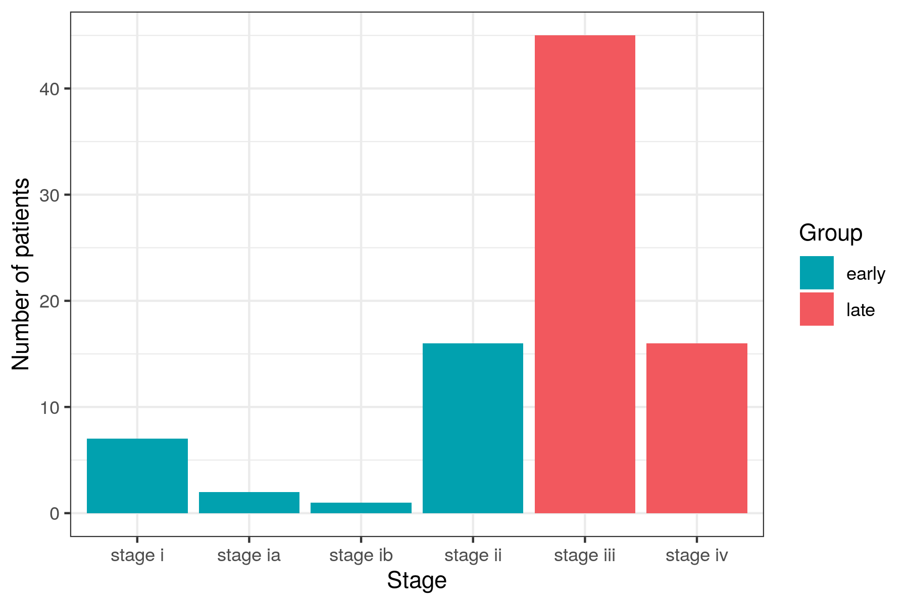
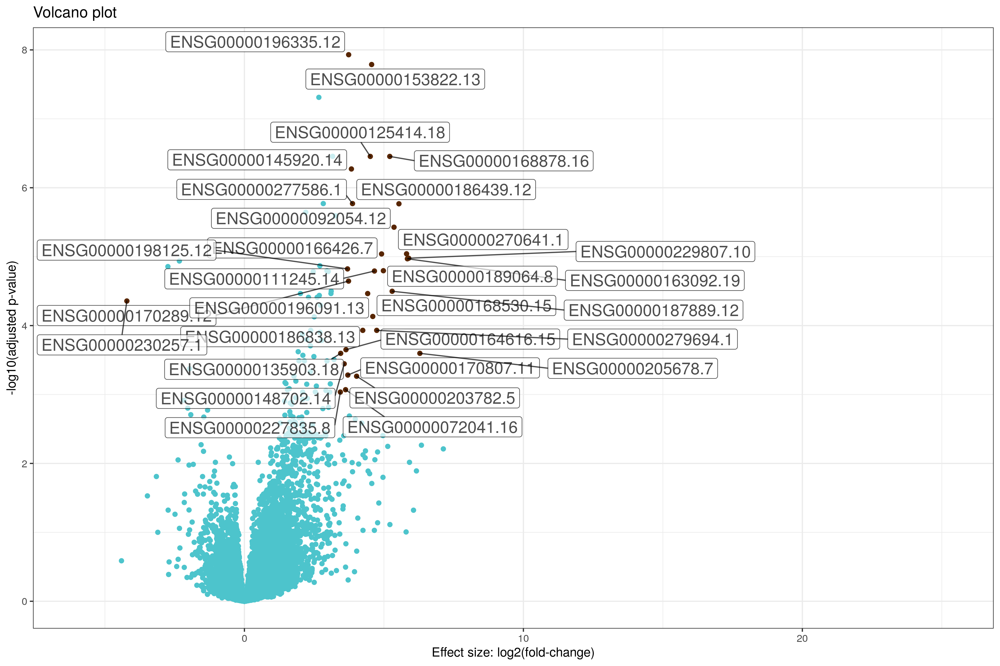
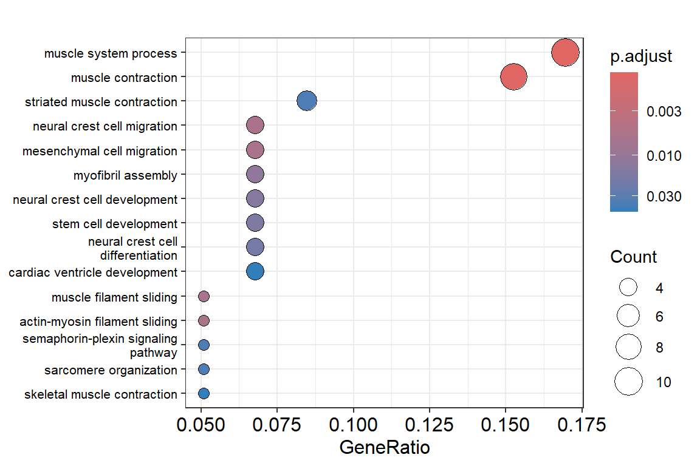

RNA-seq is a recent approach to carry out expression profiling using high-throughput sequencing (HTS) technologies. Pre-2008, microarrays were predominantly used, but because the sequencing costs have decreased, RNA-seq became the preferred option to simultaneously measure the expression of tens of thousands of genes for multiple samples.
In this tutorial we walk through a gene-level RNA-seq differential expression analysis using Bioconductor packages to find genes over- or under-expressed in cancer patients.
The Cancer Genome Atlas (TCGA) is a collaboration between the National Cancer Institute (NCI) and the National Human Genome Research Institute (NHGRI) that has generated comprehensive, multi-dimensional maps of the key genomic changes in 33 types of cancer. The TCGA dataset, comprising more than two petabytes of genomic data, has been made publicly available, and this genomic information helps the cancer research community to improve the prevention, diagnosis, and treatment of cancer.
Recount is an online resource consisting of RNA-seq gene and exon counts for different studies, including TCGA data. From there, we can download the RNA-seq data of different cancer types that we will use in this practical:
| Cancer | Download |
|---|---|
| Bile duct | Link |
| Eye | Link |
| Testis | Link |
| Pancreas | Link |
| Esophagus | Link |
| Adrenal gland | Link |
| Liver | Link |
| Bladder | Link |
| Stomach | Link |
| Skin | Link |
The practical consist on a worked example using data from pleural cancer. Each group must select a cancer type from the table to perform their own differential expression analysis.
In this practical, we are going to use the RStudio integrated development environment (IDE) for R. R is a programming language for statistical computing and graphics.
You will see different icons through the document, the meaning of which is:
: additional or useful
information
: a worked example
: a practical exercise
: a space to answer the exercise
: a hint to solve an exercise
: a more challenging exercise
Follow P2.Rmd instructions if you need to install
R and/or
RStudio
for either Windows or Linux.
Bioconductor has many packages supporting analysis of high-throughput sequence data, including RNA-seq. The packages that we will use in this tutorial include core packages maintained by the Bioconductor core team for importing and processing raw sequencing data and loading gene annotations.
You don’t need to install the packages in the UAB computers, only loading them.
install.packages("ggplot2")
install.packages("ggrepel")
install.packages("dplyr")
install.packages("pheatmap")
install.packages("tibble")
install.packages("BiocManager")
BiocManager::install(c("SummarizedExperiment", "DESeq2", "org.Hs.eg.db", "biomaRt", "edgeR", "GOstats", "annotate", "biomaRt","clusterProfiler","pathview"))Load the packages:
library(SummarizedExperiment)
library(edgeR)
library(DESeq2)
library(GOstats)
library(annotate)
library(org.Hs.eg.db)
library(biomaRt)
library(ggplot2)
library(ggrepel)
library(dplyr)
library(tibble)
library(clusterProfiler)
library(pathview)
library(pheatmap)With this worked example, we are going to illustrate how to perform an RNA-seq expression analysis on RNA-seq data from patients diagnosed with mesothelioma (pleural cancer). The goal is to compare the transcriptomic profile of patients in an early tumoral stage with ones in an advanced stage of this disease. The objective is to find differential expressed in this type of cancer.
The data is available in a Ranged Summarized
Experiment (RSE) format. It is a matrix-like container where
rows represent ranges of interest and columns represent samples (with
sample data summarized as a data.frame).
Create a working directory named
Practical 4 and create a folder named data and
inside, pleuralCancer folder.
# bash code to create directories Navigate to the
pleuralCancer folder and download the RSE
data for pleura cancer using wget.
# bash code to download the data RSE data can be loaded into
R with the load() function.
Remember to change the working directory to properly load the data if it’s necessary:
# Read RSE data of the cancer experiment
load(file = "rse_gene_pleura.Rdata")An object called rse_gene will be in your R
environment.
Exploring the data using the dim() function, we see that
there are 58037 genes (number of rows) analyzed in a cohort of 87
patients with cancer (number of columns).
The variable gdc_cases.diagnoses.tumor_stage which is
inside the rse_gene object contains information of the
tumoral stage (i.e.: stage i, stage ia, stage ib, stage ii, stage iii,
stage iv). We can use this information to create a new variable in the
rse_gene object called GROUP distinguishing
“early” and “late” tumours. Early tumours are those in
stages i and ii, while late tumours those in stages iii and iv.
The following code will add an additional column GROUP
to the meta-data to organize the cancer stages:
stage <- rse_gene$gdc_cases.diagnoses.tumor_stage
# id list of early tumours
ids.early <-grep(paste("stage i$", "stage ia$","stage ib$","stage ic$", "stage ii$", "stage iia$","stage iib$", "stage iic$",sep="|"), stage)
# id list of late tumours
ids.late <-grep(paste("stage iii$", "stage iiia$", "stage iiib$","stage iiic$", "stage iv$", "stage iva$","stage ivb$", "stage ivc$",sep="|"), stage)
# create an empty column named GROUP
colData(rse_gene)$GROUP <-rep(NA, ncol(rse_gene))
# add early for those patients with tumours at stages i-ii
colData(rse_gene)$GROUP[ids.early] <- "early"
# add late for those patients with tumours at stages iii-iv
colData(rse_gene)$GROUP[ids.late] <- "late"
Can you reproduce the
previous figure using the following
data.frame?
# create dataframe
dataGroups <- data.frame(Stage = rse_gene$gdc_cases.diagnoses.tumor_stage, Group = rse_gene$GROUP)
# ggplot2 plotIt is important to remove all patients whose stage of the cancer was
not recorded. We can check if it’s necessary in the pleura cancer
dataset using the table() function:
# Check if the status is NA
naData <- is.na(rse_gene$GROUP)
table(naData)## naData
## FALSE
## 87As we can see, all patients have information because all the results
are FALSE when we check if something “is na?”. But
if we are dealing with some TRUE results (i.e., there’s no
data for some patients), we can remove it as:
# After removing
dim(rse_gene)## [1] 58037 87# Remove NA
rse_gene <- rse_gene[, !naData]
dim(rse_gene)## [1] 58037 87We can summarize individuals in each category as “early” and “late”
using the table() function. We can see that there are more
than two times patients in the late stage than in the early stage.
# summary of the patients
table(rse_gene$GROUP)##
## early late
## 26 61After exploring a bit the data, we can now get the read
counts data. It can be retrieved using the assay()
function.
# save the count data
counts <- assay(rse_gene, "counts")
counts[1:5, 1:2]## E6088A41-B0DC-4FBF-8D14-BE78024CF8CD
## ENSG00000000003.14 178951
## ENSG00000000005.5 96
## ENSG00000000419.12 106814
## ENSG00000000457.13 47582
## ENSG00000000460.16 35021
## F569915C-8F77-4D67-9730-30824DB57EE5
## ENSG00000000003.14 140499
## ENSG00000000005.5 0
## ENSG00000000419.12 199680
## ENSG00000000457.13 114935
## ENSG00000000460.16 91739The data related to the phenotype of the patients
can also be retrieved using the colData() function:
# save the phenotype data
phenotype <- colData(rse_gene)
phenotype[1:5, 1:2]## DataFrame with 5 rows and 2 columns
## project sample
## <character> <logical>
## E6088A41-B0DC-4FBF-8D14-BE78024CF8CD TCGA NA
## F569915C-8F77-4D67-9730-30824DB57EE5 TCGA NA
## E3B71CB7-673B-4741-8607-4F0A11633036 TCGA NA
## DAF84798-FE3F-403C-B589-7F256AF752BE TCGA NA
## 2F38E3B1-4975-4877-9DCC-C00270602180 TCGA NAWe need to check that the same individuals are found both in the
counts dataset and in the phenotype
dataset.
# check if the same individuals are found in the datasets
identical(colnames(counts), rownames(phenotype))## [1] TRUEBecause the result is TRUE, it means that we have the
same individuals in both datasets. If the result were
FALSE, we would need to only keep those individuals in
common in both datasets. For that, we can use the intersect
function.
# save a vector with the id of the individuals in common in both datasets
individualsCommon <- intersect(colnames(counts),rownames(phenotype))
# filter the count dataset to keep only the individuals in the vector
counts <- counts[, individualsCommon]
# filter the phenotype dataset to keep only the individuals in the vector
phenotype <- phenotype[individualsCommon ,]In this case, we still have the 87 individuals.
Finally, the gene information can be retrived usiing
the rowData() function:
# save the annotation data
annotation <- rowData(rse_gene)We have information for a total of 58037 genes.
Can you explore which information is available for each gene?
Write a short summary of the information you have available (e.g., total number of individuals, filtered individuals, individuals by stage, number of genes, …)
The R package DESeq2 allows researchers to test
differential gene expression analysis based on the negative binomial
distribution (Love,
et al., 2014).
The starting point of a DESeq2 analysis is a count
matrix with one row for each gene and one column for each sample.
This function requires the SummarizedExperiment object
and the design, which in this case is given in the variable
GROUP because we want to compare early vs. late tumor
stages.
# stage of each patient
pheno.stage <- subset(phenotype, select=GROUP)
# recreate the counts in a new matrix
counts.adj <- matrix((as.vector(as.integer(counts))), nrow=nrow(counts), ncol=ncol(counts))
rownames(counts.adj) = rownames(counts)
colnames(counts.adj) = colnames(counts)
# check information
identical(colnames(counts.adj), rownames(pheno.stage))## [1] TRUE# transform the group variable to factor
pheno.stage$GROUP <- as.factor(pheno.stage$GROUP)
# create the DESeqDataSet input
DEs <- DESeqDataSetFromMatrix(countData = counts.adj,
colData = pheno.stage,
design = ~ GROUP)
# differential expression analysis
dds <- DESeq(DEs)## estimating size factors## estimating dispersions## gene-wise dispersion estimates## mean-dispersion relationship## final dispersion estimates## fitting model and testing## -- replacing outliers and refitting for 14013 genes
## -- DESeq argument 'minReplicatesForReplace' = 7
## -- original counts are preserved in counts(dds)## estimating dispersions## fitting model and testing# results extracts a result table from a DESEq analysis
res <- results(dds, pAdjustMethod = "fdr")
head(res)## log2 fold change (MLE): GROUP late vs early
## Wald test p-value: GROUP late vs early
## DataFrame with 6 rows and 6 columns
## baseMean log2FoldChange lfcSE stat pvalue
## <numeric> <numeric> <numeric> <numeric> <numeric>
## ENSG00000000003.14 101128.503 0.34851535 0.1540890 2.2617795 0.023711
## ENSG00000000005.5 596.733 0.09772101 0.8365402 0.1168157 0.907006
## ENSG00000000419.12 153535.012 0.03289449 0.0852123 0.3860298 0.699475
## ENSG00000000457.13 75525.959 -0.00632404 0.1063606 -0.0594585 0.952587
## ENSG00000000460.16 63657.960 0.05550581 0.1342357 0.4134950 0.679244
## ENSG00000000938.12 58717.998 -0.14399564 0.2305406 -0.6245998 0.532234
## padj
## <numeric>
## ENSG00000000003.14 0.287444
## ENSG00000000005.5 0.981375
## ENSG00000000419.12 0.922740
## ENSG00000000457.13 0.991311
## ENSG00000000460.16 0.915973
## ENSG00000000938.12 0.863187 What type of object is
res?
Hint: You can use the
function class.
To simplify the workflow and make plotting easier, we will convert
the results into a data.frame of type tibble.
Additionally, we will save the gene names in a new column called “gene”
and remove rows with NA values in the corrected p-value
column padj:
library(dplyr)
library(tibble)
res_tb <- res %>%
data.frame() %>%
rownames_to_column(var="gene") %>%
as_tibble() %>%
filter(!is.na(padj))## # A tibble: 6 × 7
## gene baseMean log2FoldChange lfcSE stat pvalue padj
## <chr> <dbl> <dbl> <dbl> <dbl> <dbl> <dbl>
## 1 ENSG00000000003.14 101129. 0.349 0.154 2.26 0.0237 0.287
## 2 ENSG00000000005.5 597. 0.0977 0.837 0.117 0.907 0.981
## 3 ENSG00000000419.12 153535. 0.0329 0.0852 0.386 0.699 0.923
## 4 ENSG00000000457.13 75526. -0.00632 0.106 -0.0595 0.953 0.991
## 5 ENSG00000000460.16 63658. 0.0555 0.134 0.413 0.679 0.916
## 6 ENSG00000000938.12 58718. -0.144 0.231 -0.625 0.532 0.863Let’s investigate how many DEG we find in the analysis:
nrow(res_tb[res_tb$??? < ??? &
res_tb$??? > ???,]) nrow(res_tb[res_tb$??? < ??? &
res_tb$??? < ???,]) Write a short summary of the result of the DE analysis. How many genes are overexpressed? And underexpressed? Fill the table. You may one to try other criteria for filtering, for example based on the log2C (example: abs(res_tb$log2FoldChange) > log2(10),]) # absolute fold change 1.5).
| Underexpressed | Not differentially expressed | Overexpressed |
|---|---|---|
Have you noticed the gene names? Those codes belong to Ensembl. As researchers, we are more accustomed to Hugo symbols (HGNC), which are more readable and easier for humans to remember 👽.
Each analysis with biomaRt starts with selecting a
BioMart database to use. The following commands will connect us to the
most recent version of Ensembl for Human Genes.
library(biomaRt)
mart <- useEnsembl(biomart = "genes", dataset = "hsapiens_gene_ensembl")If this is your first time using biomaRt, you might
wonder how to find the two arguments we provided to the
useEnsembl() function. This is a two-step process, but once
you know the configuration you need, you can use a single command. I’ve
provided the BiomaRt
help documentation here if you need it for a different use than the
one we’ll cover today.
# Obtain list of gene names
gene_list <- res_tb$gene
# Remove the version number from the Ensembl gene IDs
gene_list_clean <- sub("\\..*", "", gene_list)
# Now query Ensembl
equivalencias <- getBM(attributes = c("hgnc_symbol", 'ensembl_gene_id'),
filters = "ensembl_gene_id", values = gene_list_clean,
bmHeader = TRUE, mart = mart)
# Modify column names
colnames(equivalencias) <- c("hgnc_symbol", "gene")Now, equivalencias contains the mappings between the
Entrez symbol and the HGNC symbol.
## hgnc_symbol gene
## 1 TSPAN6 ENSG00000000003
## 2 TNMD ENSG00000000005
## 3 DPM1 ENSG00000000419
## 4 SCYL3 ENSG00000000457
## 5 FIRRM ENSG00000000460
## 6 FGR ENSG00000000938Let’s set the symbols we obtained as the rownames of the
countData table:
res_tb$gene <- sub("\\..*", "", res_tb$gene)
res_tb <- merge(res_tb,equivalencias,by="gene")This is how the res_tb table looks now:
## gene baseMean log2FoldChange lfcSE stat pvalue
## 1 ENSG00000000003 101128.503 0.348515346 0.15408900 2.2617795 0.02371103
## 2 ENSG00000000005 596.733 0.097721010 0.83654021 0.1168157 0.90700612
## 3 ENSG00000000419 153535.012 0.032894485 0.08521229 0.3860298 0.69947458
## 4 ENSG00000000457 75525.959 -0.006324041 0.10636058 -0.0594585 0.95258692
## 5 ENSG00000000460 63657.960 0.055505814 0.13423574 0.4134950 0.67924396
## 6 ENSG00000000938 58717.998 -0.143995640 0.23054065 -0.6245998 0.53223376
## padj hgnc_symbol
## 1 0.2874436 TSPAN6
## 2 0.9813750 TNMD
## 3 0.9227398 DPM1
## 4 0.9913112 SCYL3
## 5 0.9159725 FIRRM
## 6 0.8631869 FGRIn statistics, a volcano plot is a type of
scatter-plot that is used to identify changes in large data sets. It
plots significance vs. fold-change on the y and
x axes, respectively.
More specifically, a volcano plot is essentially an scatter plot,
constructed by plotting the negative log of the P-value
on the y-axis (usually base 10). This results in data
points with low P-values (highly significant) appearing toward the top
of the plot. The x-axis is the log of the fold
change between the two conditions (usually base 2). Each point
(gene) will be colored based on the filtering (filter).
# new column with TRUE/FALSE representing if a gene is deferentially expressed or not
res_tb$filter <- abs(res_tb$log2FoldChange) > log2(10) & res_tb$padj < 0.001
table(res_tb$filter)##
## FALSE TRUE
## 33093 30With the previous information, build the basic
ggplot() layer (i.e.,
ggplot() + geom_*())
Improving the graph with publication-quality details
+ theme_*)scale_color_manual())+ labs())One finally thing we can do is to annotate the name of the DE
genes. For that we can use the geom_label_repel() function
from the ggrepel library.
# plot + geom_label_repel(data=res_tb[abs(res_tb$log2FoldChange) > log2(10) & res_tb$padj < 0.001 ,], aes(label = as.factor(hgnc_symbol)), alpha = 0.7, size = 5, force = 1.3) The resulting figure could look like something like this:

This package supports functional features of both coding and non-coding genomic data for thousands of species with updated genetic annotations. It provides a universal interface for functional annotation of genes from a variety of sources, making it applicable in diverse scenarios. It offers a streamlined interface to access, manipulate, and visualize enrichment results, helping users achieve efficient data interpretation. Datasets obtained from multiple treatments and time points can be analyzed and compared in a single run, easily revealing functional consensus and differences between different conditions.
Function enrichGO: Given a vector of genes, this
function will return the GO enrichment categories after FDR control. GO
includes three orthogonal ontologies: molecular function (MF),
biological process (BP), and cellular component (CC).
# load libreries
library(clusterProfiler)
library(org.Hs.eg.db)
# extract significant results
signif_res <- res_tb[res_tb$padj < 0.001 &
abs(res_tb$log2FoldChange) >= log2(1.5), ]
# Gene vector
signif_genes <- as.character(signif_res$hgnc_symbol)
# Execute GO analysis
ego <- enrichGO(gene = signif_genes,
keyType = "SYMBOL", # change name to symbols
OrgDb = org.Hs.eg.db,
ont = "BP", # Biological process, molecular function (MF) and cell component (CC) available
pAdjustMethod = "BH",
qvalueCutoff = 0.05,
readable = F)The dotplot function creates a plot with the enrichment
results.
dotplot(ego, showCategory=15) +
theme(axis.text.y = element_text(size=8))
Perform the GO enrichment for MF and CC categories. Interpret the results.
Function enrichKEGG: given a vector of genes, this
function will return the KEGG enrichment categories with FDR control. As
enrichGO, it requires a vector of genes of interest (e.g.,
the most significant ones), but it only works with a particular gene ID
format, so we need first to obtain them with biomaRt.
#install.packages("R.utils")
#library(R.utils)
R.utils::setOption("clusterProfiler.download.method","auto")
# Convert gene IDs for the function
# We will lose some genes here because not all IDs will be converted
ids <- bitr(signif_genes, fromType = "SYMBOL", toType = "ENTREZID", OrgDb = org.Hs.eg.db)## 'select()' returned 1:1 mapping between keys and columns## Warning in bitr(signif_genes, fromType = "SYMBOL", toType = "ENTREZID", : 1.35%
## of input gene IDs are fail to map...# Remove duplicate IDs (here we use "SYMBOL", but it should match the selected key type)
dedup_ids <- ids[!duplicated(ids[c("SYMBOL")]),]
# run enrichKEGG
kegg_organism = "hsa"
keggResult = enrichKEGG(gene = dedup_ids$ENTREZID,
organism = kegg_organism,
minGSSize = 3,
maxGSSize = 800,
pvalueCutoff = 0.05,
pAdjustMethod = "BH",
keyType = "ncbi-geneid")## Reading KEGG annotation online: "https://rest.kegg.jp/link/hsa/pathway"...## Reading KEGG annotation online: "https://rest.kegg.jp/list/pathway/hsa"...## Reading KEGG annotation online: "https://rest.kegg.jp/conv/ncbi-geneid/hsa"... Run the function
dotplot on the KEGG enrichment output. Interpret the
results.
This package will generate a PNG image and a PDF of the enriched KEGG pathway we select.
First we visualize the pathways with the following code:
keggResult[,1:2]## category subcategory
## hsa04820 Cellular Processes Cell motility
## hsa04814 Cellular Processes Cell motility
## hsa04260 Organismal Systems Circulatory system
## hsa05202 Human Diseases Cancer: overview
## hsa05410 Human Diseases Cardiovascular disease
## hsa05414 Human Diseases Cardiovascular diseaseWe can select the pathway that interests us the most, for example, the first one, by extracting only the ID:
pathway <- keggResult$ID[1]Next, we call pathview to obtain an image of the pathway
we are interested in, using the FC values from our data:
library(pathview)
r1 = pathview(gene.data = dedup_ids$ENTREZID, pathway.id = pathway, species = kegg_organism)Perform the analysis on a pathway of your choice and interpret the results.
Following the pleura cancer example, perform a RNA-seq analysis using one of the tumor data provided in the table (ideally, each group analyze a different tumor dataset).
Write a short article of your RNA-seq analysis. You can use the Overleaf report sample. The article should contain the following sections:
Upload this Rmd document and the figures you have
generated to your GitHub repository.
Practical based on Juan Ramón González’ material available at GitHub and CIBEREHD Bioinformatics Initiation course by Ana Maria Corraliza and Marta Coronado Zamora.